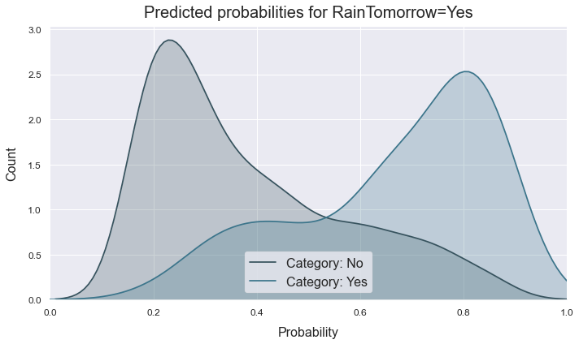
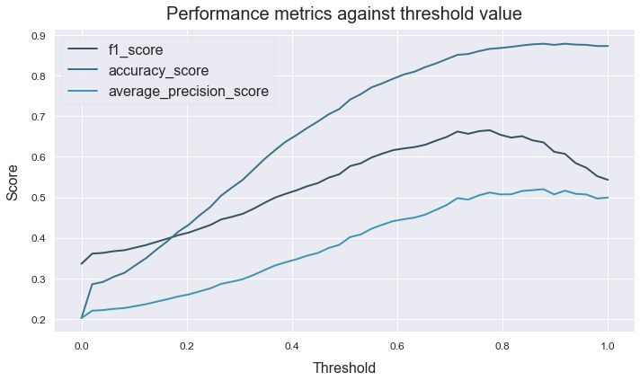
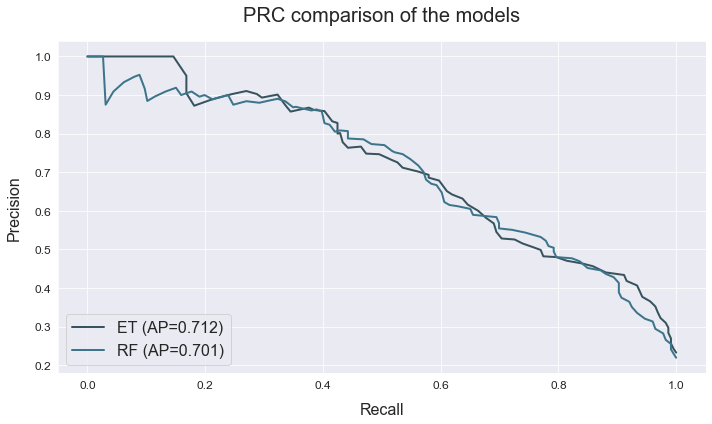

Binary classification
This example shows how we can use ATOM to perform a variety of data cleaning steps in order to prepare the data for modelling. Then, we compare the performances of two tree-based models.
The data used is a variation on the Australian weather dataset from https://www.kaggle.com/jsphyg/weather-dataset-rattle-package. The goal of this dataset is to predict whether or not it will rain tomorrow training a binay classifier on target RainTomorrow.
Load the data
# Import packages
import pandas as pd
from atom import ATOMClassifier
# Load data
X = pd.read_csv('./datasets/weatherAUS.csv')
# Let's have a look at a subset of the data
X.sample(frac=1).iloc[:5, :8]
| Location | MinTemp | MaxTemp | Rainfall | Evaporation | Sunshine | WindGustDir | WindGustSpeed | |
|---|---|---|---|---|---|---|---|---|
| 119416 | Perth | 10.8 | 20.0 | 0.0 | 2.2 | 9.2 | N | 31.0 |
| 106911 | Albany | 7.7 | 21.0 | 6.4 | 3.4 | 8.3 | NaN | NaN |
| 7934 | Cobar | 9.9 | 23.6 | 0.0 | 5.4 | NaN | ENE | 37.0 |
| 60207 | Sale | 10.3 | 26.0 | 0.0 | 3.2 | 8.5 | E | 31.0 |
| 141829 | Uluru | 8.8 | 11.3 | 0.6 | NaN | NaN | E | 35.0 |
Run the pipeline
# Call ATOM using only 5% of the complete dataset (for explanatory purposes)
atom = ATOMClassifier(X, 'RainTomorrow', n_rows=0.05, n_jobs=8, warnings=False, verbose=2, random_state=1)
<< ================== ATOM ================== >>
Algorithm task: binary classification.
Parallel processing with 8 cores.
Dataset stats ================== >>
Shape: (7110, 22)
Missing values: 15896
Categorical columns: 5
Scaled: False
-----------------------------------
Train set size: 5688
Test set size: 1422
-----------------------------------
Train set balance: No:Yes <==> 1.0:3.7
Test set balance: No:Yes <==> 1.0:4.1
-----------------------------------
Distribution of classes:
| | dataset | train | test |
|:----|----------:|--------:|-------:|
| No | 1495 | 1215 | 280 |
| Yes | 5615 | 4473 | 1142 |
# Encode the target column
atom.clean()
Applying data cleaning...
--> Label-encoding the target column.
# Impute missing values
atom.impute(strat_num='knn', strat_cat='drop', min_frac_rows=0.8)
Imputing missing values...
--> Dropping 774 rows for containing less than 80% non-missing values.
--> Imputing 7 missing values using the KNN imputer in feature MinTemp.
--> Imputing 5 missing values using the KNN imputer in feature MaxTemp.
--> Imputing 33 missing values using the KNN imputer in feature Rainfall.
--> Imputing 2315 missing values using the KNN imputer in feature Evaporation.
--> Imputing 2648 missing values using the KNN imputer in feature Sunshine.
--> Dropping 202 rows due to missing values in feature WindGustDir.
--> Dropping 358 rows due to missing values in feature WindDir9am.
--> Dropping 15 rows due to missing values in feature WindDir3pm.
--> Imputing 17 missing values using the KNN imputer in feature Humidity9am.
--> Imputing 54 missing values using the KNN imputer in feature Humidity3pm.
--> Imputing 37 missing values using the KNN imputer in feature Pressure9am.
--> Imputing 34 missing values using the KNN imputer in feature Pressure3pm.
--> Imputing 1891 missing values using the KNN imputer in feature Cloud9am.
--> Imputing 1979 missing values using the KNN imputer in feature Cloud3pm.
--> Imputing 4 missing values using the KNN imputer in feature Temp9am.
--> Imputing 33 missing values using the KNN imputer in feature Temp3pm.
--> Dropping 31 rows due to missing values in feature RainToday.
# Encode the categorical features
atom.encode(strategy='CatBoost', max_onehot=10, frac_to_other=0.04)
Fitting Encoder...
Encoding categorical columns...
--> CatBoost-encoding feature Location. Contains 1 unique classes.
--> CatBoost-encoding feature WindGustDir. Contains 16 unique classes.
--> CatBoost-encoding feature WindDir9am. Contains 16 unique classes.
--> CatBoost-encoding feature WindDir3pm. Contains 16 unique classes.
--> Label-encoding feature RainToday. Contains 2 unique classes.
# Fit the EXtra-Trees and Random Forest to the data
atom.run(models=['et', 'rf'], metric='f1', bagging=5, verbose=1)
Training ===================================== >>
Models: ET, RF
Metric: f1
Results for Extra-Trees:
Fit ---------------------------------------------
Train evaluation --> f1: 1.0000
Test evaluation --> f1: 0.5568
Time elapsed: 0.188s
Bagging -----------------------------------------
Evaluation --> f1: 0.5809 ± 0.0211
Time elapsed: 0.738s
-------------------------------------------------
Total time: 0.928s
Results for Random Forest:
Fit ---------------------------------------------
Train evaluation --> f1: 1.0000
Test evaluation --> f1: 0.5940
Time elapsed: 0.228s
Bagging -----------------------------------------
Evaluation --> f1: 0.5977 ± 0.0134
Time elapsed: 1.031s
-------------------------------------------------
Total time: 1.260s
Final results ========================= >>
Duration: 2.190s
------------------------------------------
Extra-Trees --> f1: 0.581 ± 0.021 ~
Random Forest --> f1: 0.598 ± 0.013 ~ !
Analyze the results
# Let's have a look at the final scoring
atom.scoring()
# The winning model is indicated with a ! and can be accessed through the winner attribute
# The ~ indicates that the model is probably overfitting. If we look at the train and test
# score we see a difference of more than 20%
print(f'\n\nAnd the winner is the {atom.winner.fullname} model!!')
print('Score on the training set: ', atom.winner.metric_train)
print('Score on the test set: ', atom.winner.metric_test)
Results ===================== >>
Extra-Trees --> f1: 0.581 ± 0.021 ~
Random Forest --> f1: 0.598 ± 0.013 ~
And the winner is the Random Forest model!!
Score on the training set: 1.0
Score on the test set: 0.5940054495912807
We can make many plots to check the performance of the models
# The probabilties plot shows the distribution of predicted
# probabilities for the positive class
atom.winner.plot_probabilities()

# The threshold plot let us compare how different metrics
# perform for different thresholds
atom.winner.plot_threshold(metric=['f1', 'accuracy', 'average_precision'], steps=50, filename='thresholds.png')

# The ROC and PRC curve are also typical ways of measuring performance
atom.plot_roc(title="ROC for the LightGBM vs CatBoost model")
atom.plot_prc(title="PRC comparison of the models")

